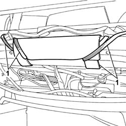
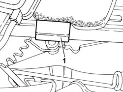
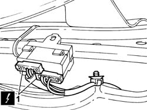
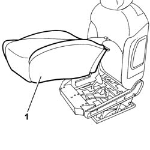

7045D21 TRIM OF ONE FRONT SEAT LH OR RH RR WITH SEAT REMOVED
- Path
- Procedures > 70 FITTINGS > 7045 FRONT SEATS > 7045D RIVESTIMENTO/IMBOTTITURA SEDILI ANTERIORI > 7045D21 TRIM OF ONE FRONT SEAT LH OR RH RR WITH SEAT REMOVED
- Kind
- repair procedure (removal / refitting; the operation number is the code)
- Applies to
- all engines; all production periods
- Interactive page
- https://sloeber94.github.io/elrnDB-fUlss/en/#/179007862
Applies to: all engines; all production periods
 Removing
Removing
 Refitting
RefittingOp. 7045A43 SEAT EXTERIOR GUARD - R R
Op. 7045A44 SEAT INTERIOR GUARD - R R
Op. 7045A98 FRONT SEAT REAR POUCH PANEL, LH OR RH - R R
1. Release the lower traction elastics for the backrest rear cover.

Applies to: all engines; all production periods
1. Release the side traction elastic for the cushion cover for one of the front seats.

Applies to: all engines; all production periods
- Remove the front seat cushion upholstery retaining band.
1. Disconnect the electrical connections for the electronic thermostat for the front seat heating system.

Applies to: all engines; all production periods
- Release the traction elastic for the cushion cover for one of the front seats.
1. Remove the cushion cover for one of the front seats complete with cushion upholstery and front seat heating system.

Applies to: all engines; all production periods
Refitting
Removing- Fit the cushion cover for one of the front seats complete with cushion upholstery and front seat heating system.
- Connect the electrical connection for the electronic thermostat for the front seat heating system.
- Fit the front seat cushion upholstery retaining band.
- Attach the side traction elastic for the cushion cover for one of the front seats.
- Attach the lower traction elastics for the backrest rear cover.
Op. 7045A98 FRONT SEAT REAR POUCH PANEL, LH OR RH - R R
Topics linked from this page (3)
- 7045A43 SEAT EXTERIOR GUARD - R R
- 7045A44 SEAT INTERIOR GUARD - R R
- 7045A98 FRONT SEAT REAR POUCH PANEL, LH OR RH - R R